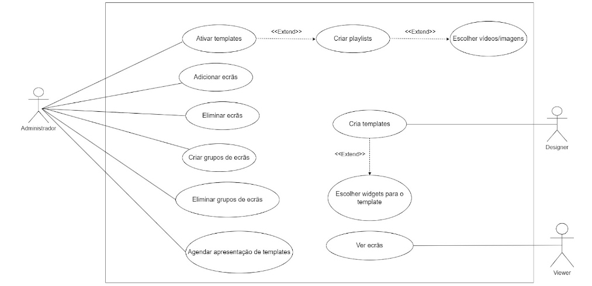

Informatics Project
Project Proposal
Inception Phase
Context
As technology evolves, so does our mode of communication. In the past, a simple piece of paper with a few words could effectively convey an idea. However, in today's fast-paced environment, things change rapidly. Ideas evolve, new developments arise, and the need to reach millions of people simultaneously may arise. Traditional signage is no longer the most efficient method of disseminating information; this is where digital signage steps in.
No longer do we need to manually update room schedules or leave a paper notice indicating an ongoing meeting. No more basic videos with manual set up required. Digital signage handles these tasks seamlessly.
Problem
Integration with the university’s IDP
Incorporating university's IDP in our software is a key requirement for the final product. While implementing login based on the university's IDP might appear straightforward, it is likely to pose complexities given our unfamiliarity with this field. Moreover, such integration typically involves a time-consuming acceptance process, adding to its difficulty.
Test driven development implementation
To mitigate future errors and ensure a seamless software development process, we will implement tests for our backend. These tests will be integrated into GitHub Actions, allowing us to identify errors before they are committed to more critical branches, thus enhancing the reliability of our codebase.
User friendly Content Creation Tool (CCT)
Designing a user-friendly interface is a complex endeavor. Developing user-friendly software presents an even greater challenge, as it necessitates concealing numerous complex operations. Crafting a user-friendly interface and software that empowers users to create their own templates will undoubtedly be a formidable task.
Good documentation and installation guides
Given that this project is intended for continuous development and enhancement over the years, it is imperative to establish comprehensive and dedicated documentation, including clear guidelines for both usage and installation.
Scalability and Performance
At the outset, we will operate with only a few computers, rendering scalability and performance less pressing concerns. Nevertheless, considering the ultimate goal of deploying this project university-wide, it is crucial to anticipate and strategize the design and development of our system in a scalable manner without sacrificing performance or necessitating an excessively powerful server.
Goals
Manage electronic displays remotely.
Our system must be a centralized system with distributed components.
-
Centralized System: The main server with the database and software acts as a central hub where data is stored and processed. This centralization provides a single point of control and management for the system.
-
Distributed Components: Information is transmitted to Raspberry Pis via the network, facilitated by a broker. These Raspberry Pis function as endpoints, receiving and requesting data from the central server. They are capable of performing additional processing or executing actions based on the received information.
Have a Media Player that allows for displaying content and receive real time updates from different sources.
We are required to implement a Media Player capable of seamlessly displaying content and receiving real-time updates from diverse sources.
Have a Content Management System to manage all the screens and allow scheduling and timing of content playback.
Develop a robust Content Management System (CMS) empowering administrators to monitor screen statuses and logs, while providing users with the capability to schedule content playback at specific times and chosen templates.
Create a Content Creation Tool that assists the users designing the templates.
As mentioned earlier, we require user-friendly software that effortlessly provides all the necessary tools for creating and manipulating templates.
Expected Results
Minimal Viable Product (MVP) of a Digital Signage System
The functionalities that are expected from us are a software that allow for monitoring, adding, manipulating and configure display of monitors. IDP integration and CCT is a challenge, but doable ones.
User-friendly Content Management System (CMS) and Content Creation Tool (CCT)
Both a user-friendly CMS and CCT is expected from us by the end of the project. These tools have to be built in a way that provide scalability and easy understanding.
Integration with the university’s IDP
Our project requires login to be based on university's IDP.
OS image that auto-boots into the Media Player upon startup
We need an OS image programmed to boot our software automatically, initiating communication with our backend upon network connection.
All the code should include tests and comments
Every piece of code must be accompanied by thorough testing suites and if a function's name lacks clarity, ensure comprehensive testing and comments are provided to elucidate its purpose and functionality.
Clear documentation and contribution guidelines
Due to its open-source nature, ensure transparent and accessible documentation along with contribution guidelines, allowing next students or professionals to have an easy time to build upon our software.
Task list
- Raspberry pi configuration
- Template design/requirements
- Architecture development / System design and planning
- Content Distribution Strategy
- Communication plan (documentation)
- Tests (User acceptance and System)
- User friendly CCT
Calendar
Our initial calendar can be found in our M1 presentation; however, it provided only a broad overview of the problem. Therefore, we do not consider it as the definitive calendar. Instead, the following Calendar is more reliable.
{kind=link}
Templates
Elaboration Phase
Comunication Plan
The following table summarizes the recommended communication channel based on the purpose of communication:
| Purpose | Channel |
|---|---|
| Real-time discussions, quick updates, task delegation and informal communication. | Discord |
| Formal communication, and information sharing. | Outlook |
| Code collaboration, version control, and issue tracking. | Github |
Detailed Use Cases
- Discord

- Use Cases:
- Team discussions for brainstorming, project updates, and ad-hoc questions.
- Assigning tasks and tracking progress.
- Sharing quick wins, announcements, and real-time project status updates.
- Use Cases:
- Outlook

- Use Cases:
- Sending official emails, meeting information, and project reports.
- Use Cases:
- Github

- Use Cases:
- Hosting code repositories, managing changes, and tracking development progress.
- Reporting bugs, requesting features, and collaborating on code solutions.
- Maintaining a central location for project files and documentation.
- Use Cases:
Organization
Repositories
Context and State of The Art (SOA)
In the context of digital signage Aveiro University (UA) has been using static display for videos and information in televisions across all monitors within the Department of Eletronics, Telecommunications and Informatics (DETI). No prior software has been developed in this regard within UA.
To display videos, DETI is currently using a Media Player on a windows machine to display them. Due to its limitations we are building a software from the ground with a flexible structure, schedule functionality and dynamic information display.
The project aims to build a system that will be used over the years and done in a way that can be improved and built on easily.
Functional Requirements
Content Management:
- Ability to upload, manage and organize content.
- Support for various media formats (images, videos, text).
- Content scheduling for specific times or events.
Display Management:
- Control over which screens display specific content.
- Grouping of screens.
- Support for remote display management and configuration.
Integration:
- Integration with external data sources (RSS feeds, social media, APIs) for dynamic content.
- Compatibility with various screen types.
User Interface:
- Intuitive user interface for content management.
- Role-based access control for different users (administrators, content managers, etc.).
- Reporting and analytics features to track content performance and screen status.
Non-Functional Requirements
Performance:
- Fast response times for content uploads and updates.
- Smooth playback without buffering or lag.
- Scalability to support a growing number of screens and users.
Reliability:
- High availability to ensure screens are always operational.
- Fault tolerance to handle hardware failures or network issues.
- Disaster recovery capabilities to recover from system failures (backups).
Security:
- User authentication and authorization mechanisms.
- Encryption of data during transmission and storage.
- Protection against unauthorized access and tampering of content.
Scalability:
- Ability to scale the system as the number of screens or content volume increases.
Usability:
- Support for localization.
Compatibility:
- Compatibility with various operating systems and web browsers (raspi by construction should be always the same, react should be universal).
- Compliance with industry standards and protocols (HTML5 + RESTful APIs).
Personas
Nuno - DETI Director
- Name: Nuno
- Age: 37
- Occupation: Technician
Background:
- Seasoned university employee with over 15 years of experience.
- Recognized for administrative excellence and valued by colleagues.
- Limited experience with design aspects.
- Prefers user-friendly and straightforward technological platforms.
Goals:
- Effortlessly share pre-made content, including:
- News announcements
- Promotional videos
- Other relevant resources
- Manage the displayed information through a simple and intuitive interface (add/remove screens).
Note: Nuno's technical expertise lies primarily in administrative tasks. Aim to provide clear and concise instructions for content management.
Sara - UI/UX Designer
- Name: Sara
- Age: 30
- Occupation: Designer
Profile:
- Software: Prefers feature-rich and customizable tools to unleash her creative potential.
- Workflow: Values efficient tools that streamline design processes and enable quick production of high-quality content.
- Design Approach: Enjoys experimentation with various design elements and actively seeks new features and functionalities.
Goals:
- Create engaging content specifically designed for display on DETI screens.
- Utilize her creativity to design unique templates for showcasing on designated displays.
Rodrigo - DETI Student
- Name: Rodrigo
- Age: 19
Background:
- Enthusiastic and curious student with a thirst for new knowledge and experiences.
- Actively seeks out relevant information related to academics, cultural events, and networking opportunities.
Goals:
- Easy and swift access to crucial information concerning:
- Coursework
- Academic events
- Extracurricular activities
- Clear and organized presentation of information for staying updated on the go.
Use Cases

User Stories
As an administrator:
- Edit Template Content: I want to edit template content so that I can keep it up-to-date.
- Schedule Content: I want to schedule specific content on digital screens at designated times and dates so that I can effectively manage content dissemination.
- Delete Templates: I want to delete templates so that I can remove outdated or unused content.
- Edit Groups of Screens: I want to edit groups of screens so that I can update the organization of presentations.
As a designer:
- Create Templates: I want to create templates so that I can define the structure and content of presentations.
- Choose Widgets: I want to choose widgets for the template so that I can add interactive elements to presentations.
As a viewer:
- View Screens: I want to see screens so that I can stay updated with the latest content.
- View Scheduled Content: I want to view content scheduled for specific times or dates so that I know what information is available when.